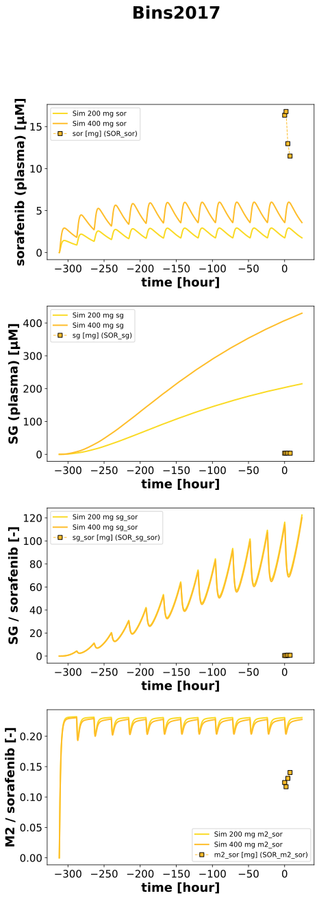

|  |
../../../../experiments/studies/bins2017.py
from copy import deepcopy
from typing import Dict
from sbmlsim.data import DataSet, load_pkdb_dataframe
from sbmlsim.fit import FitMapping, FitData
from sbmlsim.plot import Axis, Figure
from pkdb_models.models import sorafenib
from sbmlsim.simulation import Timecourse, TimecourseSim
from pkdb_models.models.sorafenib.helpers import run_experiments
from pkdb_models.models.sorafenib.experiments.base_experiment import SorafenibSimulationExperiment
class Bins2017(SorafenibSimulationExperiment):
doses = [200, 400]
substances = ["sor", "sg", "sg_sor", "m2_sor"]
yids = ["[Cve_sor]", "[Cve_sg]", "Cve_sg_sor", "Cve_m2_sor"]
datainfo = {
"sor": ["SOR_sor"], # ["SOR_sor", "SORRIF_sor"],
"sg": ["SOR_sg"], # ["SOR_sg", "SORRIF_sg"],
"sg_sor": ["SOR_sg_sor"], # ["SOR_sg_sor", "SORRIF_sg_sor"],
"m2_sor": ["SOR_m2_sor"], # ["SOR_m2_sor", "SORRIF_m2_sor"],
}
def datasets(self) -> Dict[str, DataSet]:
dsets = {}
for fig_id in ["Fig4"]:
df = load_pkdb_dataframe(f"{self.sid}_{fig_id}", data_path=self.data_path)
for label, df_label in df.groupby("label"):
dset = DataSet.from_df(df_label, self.ureg)
# dimensionless ratios
if label.endswith("_sg_sor"):
dset.unit_conversion("mean", 1 / self.Q_(1, "ng/ml"))
elif label.endswith("_m2_sor"):
dset.unit_conversion("mean", 1 / self.Q_(1, "ng/ml"))
# catch other units
elif label.endswith("_sg"):
dset.unit_conversion("mean", 1 / self.Mr.sg)
elif label.endswith("_sor"):
dset.unit_conversion("mean", 1 / self.Mr.sor)
dsets[label] = dset
# print(dsets)
return dsets
def simulations(self) -> Dict[str, TimecourseSim]:
# multiple dosing
Q_ = self.Q_
tcsims = {}
for dose in self.doses:
tc0 = Timecourse(
start=0,
end=24 * 60, # [min]
steps=200,
changes={
**self.default_changes(),
"PODOSE_sor": Q_(dose, "mg"),
},
)
tc1 = Timecourse(
start=0,
end=24 * 60, # [min]
steps=200,
changes={
"PODOSE_sor": Q_(dose, "mg"),
},
)
tcsims[f"sor_po_{dose}"] = TimecourseSim(
[tc0] + [deepcopy(tc1) for _ in range(13)], # assumed 2 weeks of treatment,
time_offset=-13*24*60
)
return tcsims
def fit_mappings(self) -> Dict[str, FitMapping]:
mappings = {}
for dose in self.doses:
for k, substance in enumerate(self.substances):
datasets = self.datainfo[substance]
for dataset in datasets:
mappings[f"fm_sor_po_{dataset}"] = FitMapping(
self,
reference=FitData(
self,
dataset=dataset,
xid="time",
yid="mean",
yid_sd=None,
count="count",
),
observable=FitData(
self, task=f"task_sor_po_{dose}", xid="time", yid=self.yids[k],
),
)
return mappings
def figures(self) -> Dict[str, Figure]:
name = "Fig4"
fig = Figure(
experiment=self,
sid=f"{name}_PO_plasma",
num_rows=4,
num_cols=1,
name=f"{self.__class__.__name__}",
)
plots = fig.create_plots(xaxis=Axis(self.label_time, unit="hour"), legend=True)
plots[0].set_yaxis(self.labels["[Cve_sor]"], unit=self.units["[Cve_sor]"])
plots[1].set_yaxis(self.labels["[Cve_sg]"], unit=self.units["[Cve_sg]"])
plots[2].set_yaxis(self.labels["Cve_sg_sor"], unit=self.units["Cve_sg_sor"])
plots[3].set_yaxis(self.labels["Cve_m2_sor"], unit=self.units["Cve_m2_sor"])
# Simulation
for k, substance in enumerate(self.substances):
datasets = self.datainfo[substance]
for dose in self.doses:
plots[k].add_data(
task=f"task_sor_po_{dose}",
xid="time",
yid=self.yids[k],
label=f"Sim {dose} mg {substance}",
color=self.color_for_dose(dose),
)
# Data
for j, dataset in enumerate(datasets):
plots[k].add_data(
dataset=dataset,
xid="time",
yid="mean",
yid_sd=None,
label=f"{substance} [mg] ({dataset})",
color=self.color_for_dose(dose),
)
return {
fig.sid: fig
}
if __name__ == "__main__":
out = sorafenib.RESULTS_PATH_SIMULATION / Bins2017.__name__
out.mkdir(parents=True, exist_ok=True)
run_experiments(Bins2017, output_dir="Bins2017")
{kind=link}